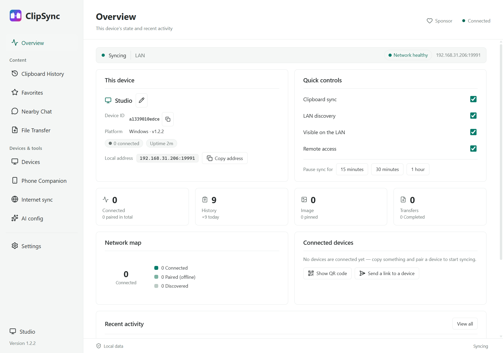
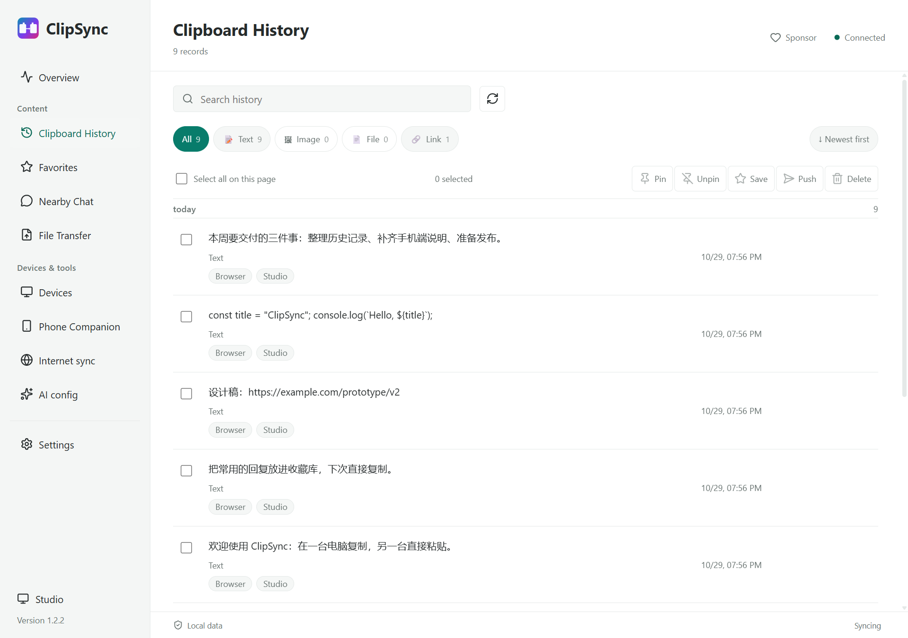
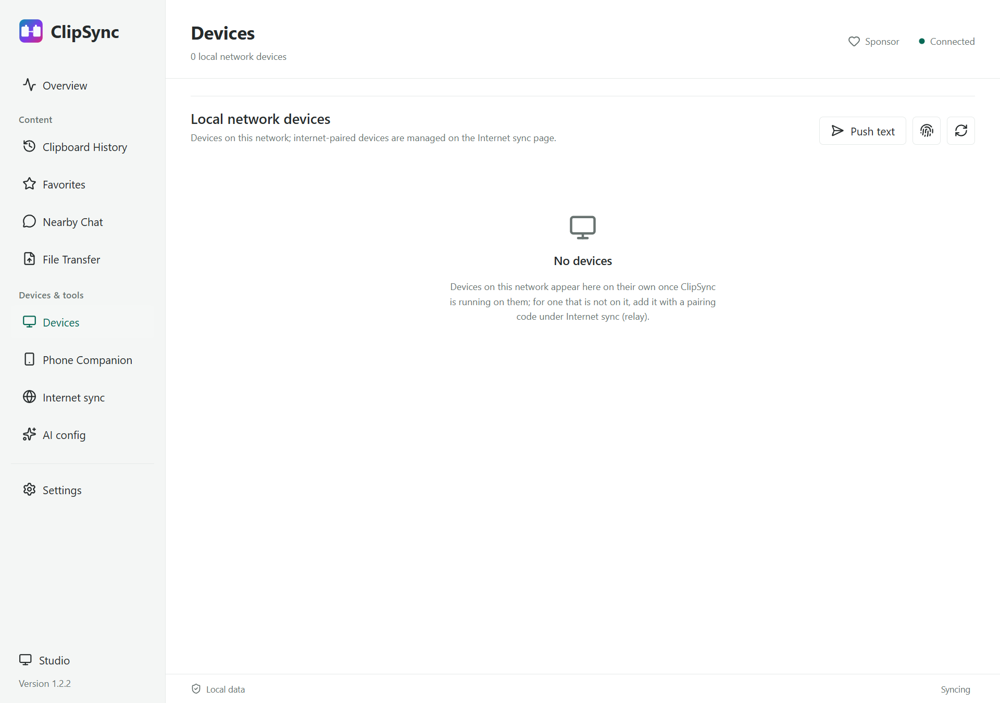
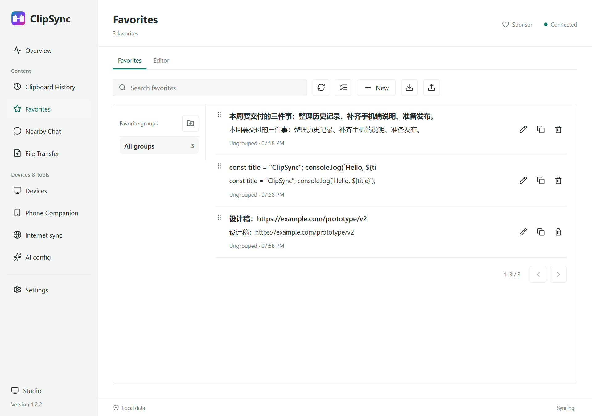
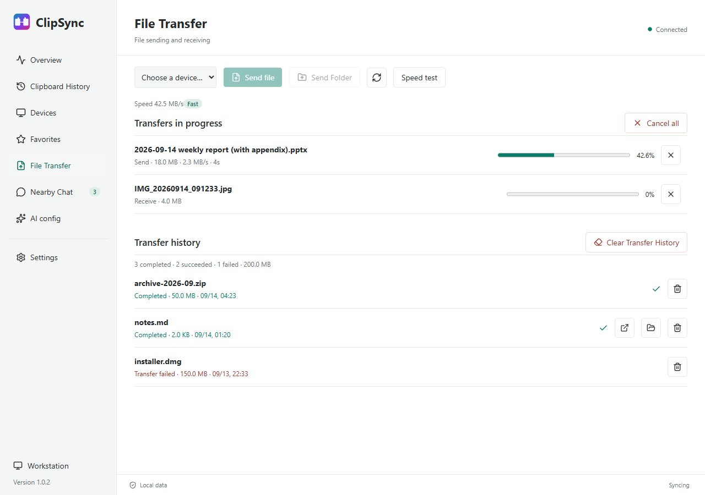
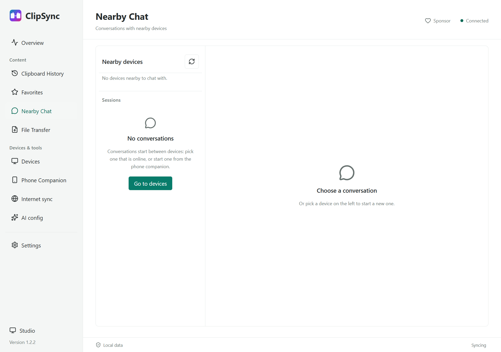
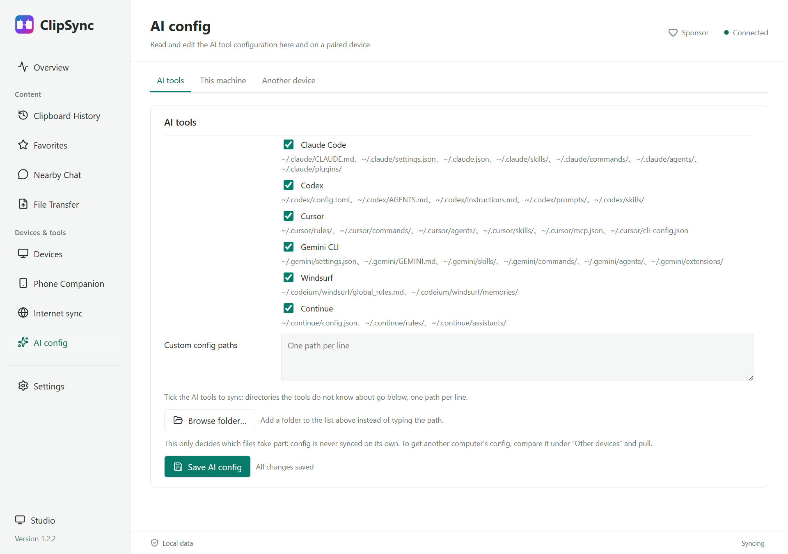
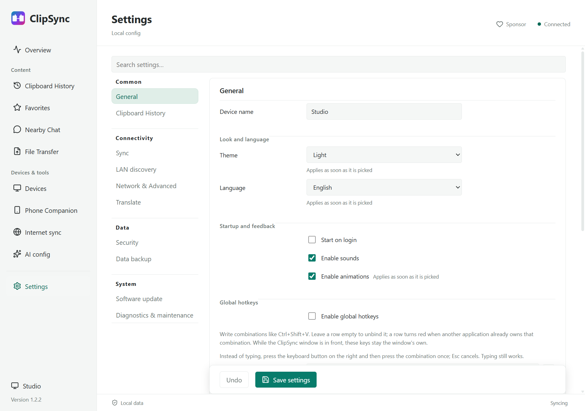
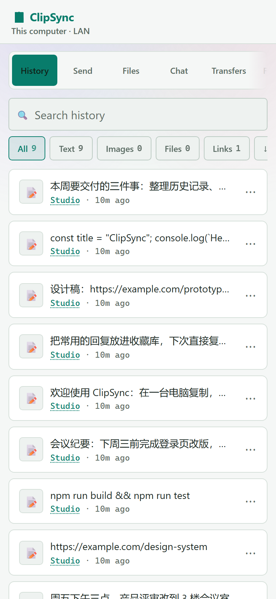

Copy once, it is already there
Text, links, pictures and files paste straight into the other computer, even when the two run different systems.
Clipboard across devices · Windows / macOS / Linux
Move text, pictures and files between your computers without messaging yourself or signing in. Install ClipSync, connect once, and it feels like using one machine. Your phone only needs a browser: scan the code and carry on.
same Wi-Fiauto-discoveryencryptedno server

What you get
Not another cloud drive, and not a chat with yourself. Copy and paste stay the same; they just work across machines now.
Text, links, pictures and files paste straight into the other computer, even when the two run different systems.
Search and filter your history, and save the pieces you reuse so you can bring them back later.
Drag files or folders into the window and choose a computer. No upload-to-a-drive detour for a quick handoff.
Scan the code on the computer to see history, grab a clip or send a file. Nothing to install.
Turn on internet sync between home and the office and keep copying; content travels encrypted between your devices.
Computers on the same Wi-Fi can chat and send files without adding each other first.
First time
When to use it
Keep working the way you already do: copy and paste.
| Situation | How it works |
|---|---|
| Home and office computers | Keep in sync on different networks; content travels encrypted between the devices |
| Moving things between a desktop and a laptop | They find each other on the same Wi-Fi; connect once, then copy as usual |
| Getting something from the computer on a phone | Show the QR code and open it in the phone's browser, with no app to install |
| Handing a file to a colleague or friend | Drop it on the window and pick a device; machines on the same network do not need connecting first |
| Keeping replies, addresses and code snippets handy | Save them in the library and copy one back whenever you need it |
| Talking to the device nearby | Computers on the same Wi-Fi can chat and send files without adding each other first |
Screens
Every page lives in the sidebar, one click away. Here are the ones you will use most.
Sync state, this machine's address, four quick switches (sync / discovery / visibility / remote access), a network map and recent activity.

Search, filter by type, copy / favourite / translate / delete per row, with multi-select batch actions. Two machines copying back and forth do not sync the same item twice.

Pairing, connection tests and per-device notes, plus internet pairing and phone access.

The clips worth keeping, on their own shelf: groups, editing, drag-to-reorder, one-click copy back, Markdown export.

Send files or folders by dropping them on the window. If a transfer is interrupted it continues where it stopped, a failed send can be retried, and there is a speed test. Computers found on the same Wi-Fi can be sent to without pairing first.

Talk to devices on the same network without pairing first; messages and files are delivered straight away.
To confirm each one, turn off both Anyone nearby can send messages and files and Anyone nearby can send me a file in Settings → LAN discovery: every message and file then waits for your Accept, and the sender's device name and identifier are shown first.

Built-in profiles for Claude Code, Codex, Cursor, Gemini CLI, Windsurf and Continue. Compare the differences, then choose overwrite, copy alongside, or merge.

General, connection, data and system cards, with a search box for settings. Three languages and six themes, plus global hotkeys, filters, retention limits, backup and restore, diagnostics and updates.
Privacy
On the same Wi-Fi, the computers find each other directly. On different networks, content is encrypted before it passes through a relay. Neither way needs a cloud account holding your clipboard.
[FILTERED]; choose the categories in Settings.Phone
The computer shows a QR code. Scan it with the phone's camera or browser and the same clipboard history opens. Add it to the home screen on iOS or Android and it is one tap away.

Download · current version 1.2.2
Download, install and open. Windows, macOS and Linux all work together.
The desktop app checks for updates in Settings and asks before installing. If another computer on the same network has already updated, it can update from that one too.
FAQ
No. On the same Wi-Fi it is easiest and they find each other automatically; on different networks, turn on internet sync and keep going.
No. Install, pair the devices and you are ready; there is no sign-up or login.
On the same Wi-Fi, content travels directly between your devices. Across networks it is encrypted before a relay forwards it; the relay does not keep it.
No. Show the QR code on the computer and open it in the phone's browser. You can add it to the home screen for one-tap access.
Yes. Windows, macOS and Linux computers can pair, sync the clipboard and send files to one another.
Yes. Closing the window puts it in the tray and clipboard sync continues. Use Quit in the tray menu to exit for real.
No. Download the installer for your system, install it and open the app.
You can set a retention limit, check how much space it uses and clear all history in Settings. Saved favourites are not cleared.
Right-click ClipSync in Finder, choose Open and confirm. If it still says the app is damaged, run xattr -dr com.apple.quarantine /Applications/ClipSync.app in Terminal and open it again.
It is free for personal and other noncommercial use. Commercial use in a company, paid product or hosted service needs a commercial license first.
Support the project
There are no ads and no account. Your support keeps it maintained and improving.